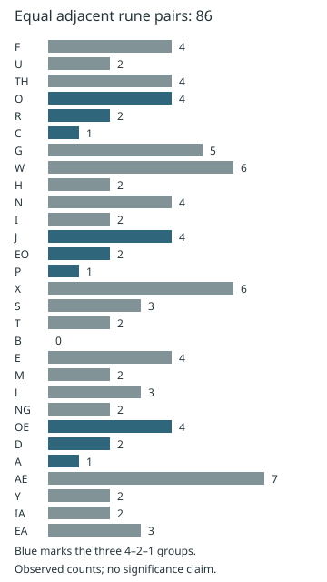
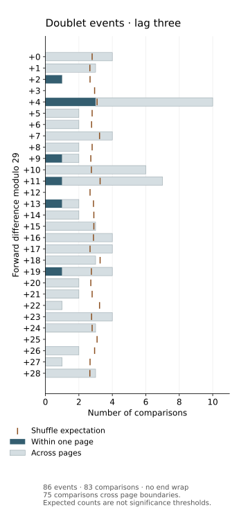

Doublets and the 4–2–1 count pattern
Locate all 86 equal adjacent rune pairs, compare boundary rules, and distinguish the observed count pattern from cipher and probability claims.
On this page
A doublet is a pair of equal adjacent symbols, such as F–F. In a rune stream, adjacency depends on what you remove: two runes separated by a word boundary become neighbors if that boundary is discarded. A count should therefore state its alphabet, pages and boundary rules before drawing conclusions.
For the measured fact, start with the counts and boundaries. For the proposed explanation that a repeated ciphertext rune marks plaintext EA, go to the exact running-sum equation; the count alone does not establish it. To check the data yourself, use the counting commands and event ledger. The 4–2–1 pattern is a separate observation about which runes form doublets.
What the archived pages contain
Keeping only the 29 alphabet runes in LP2-00–55, including headings, gives 12,956 runes and 86 doublets. Windows overlap: F–F–F contributes two F–F pairs. LP2-50 contains no alphabet runes under this rule, leaving 55 nonempty page streams.
| Boundary rule | Adjacent pairs | Doublets | Rate |
|---|---|---|---|
| Keep page boundaries | 12,901 | 86 | 0.667% |
| Join all filtered pages | 12,955 | 86 | 0.664% |
Joining the 55 nonempty streams adds 54 pairs; none is a doublet. This does not make the conventions interchangeable: they have different denominators and different shuffle models. Both remove non-runes within a page, so they can count pairs across words, lines, headings and paragraph breaks. Neither is a word-internal count.
The separator audit identifies exactly which of the 86 cross stored marks: 60 are contiguous rune characters, three cross only a row wrap, 22 cross a hyphen and one crosses other punctuation. Under the published rune-token convention, 63 of 10,028 within-token pairs match. Seven separately stored LP2 reviewed-text layers leave the 86 pair identities and these category counts unchanged; they are not a second complete transcription or a manual check of all source images.
The placement audit measures where those 86 events occur. Thirteen nonempty pages have none, close to the 12.25 expected when 86 events are placed among the actual pages' edge slots. The shortest gap between successive event starts is six runes; its conditional reference is near the upper edge, while page-count variation and first/last-page-edge counts are within their stated ranges. These placement controls do not model plaintext or a cipher.

The three 4–2–1 groups
The count vector, in the stored Gematria Primus alphabet order, is:
F U TH
4 2 4
O R C
4 2 1
G W H N I
5 6 2 4 2
J EO P
4 2 1
X S T B E M L NG
6 3 2 0 4 2 3 2
OE D A
4 2 1
AE Y IA EA
7 2 2 3The three contiguous 4–2–1 windows begin at zero-based alphabet indices 3, 11 and 22. The groups have 3, 5 and 8 other alphabet entries before them when you count the initial segment and then the gaps between the groups. Their start-to-start distances are 8 and 11, not 3, 5 and 8. State which quantity you mean when discussing a Fibonacci pattern.
These counts reproduce the observation. They do not establish that 421 was deliberately encoded, that O–R–C is plaintext, or that a Fibonacci rule decrypts a page. Sorting by count or changing the alphabet order changes the pattern being inspected. A chance calculation must specify whether 421, this order, these gap lengths and this page set were fixed beforehand or selected after looking at the data.
The report identifies every occurrence by page, zero-based rune ordinal, original character offset, line and column. A location in a joined chapter or an alternative page order will have a different ordinal. Use the source coordinates before comparing an unexplained list of indices.
Low compared with which model?
For a stream of N runes with frequencies f₁, f₂, …, the probability that a particular neighboring pair matches under a uniform random permutation of those runes is Σ fᵢ(fᵢ−1) / [N(N−1)]. There are N−1 neighboring positions, so the expected total is Σ fᵢ(fᵢ−1) / N. Overlapping pairs need not be independent for this expectation: we add their individual expectations.
Shuffling within each page separately gives an expected total of 439.166, compared with the observed 86. Shuffling the entire joined stream gives 446.668. These are two different reference models. The script retains exact fractions as well as decimal approximations.
An expectation is not a p-value. This audit has not computed a tail probability, searched candidate ciphers or adjusted for selecting an interesting pattern. Randomly permuting runes also does not model English grammar, word boundaries or every possible cipher. See null models and selection before using the size of this difference as evidence for a particular explanation.
The short-lag profile asks whether the deficit extends beyond adjacent runes. Under fixed-count shuffles within pages, lag one has 86 matches against 439.17 expected, while lags two through five have 435, 434, 451 and 463 matches, each within its seeded shuffle reference band. That distinction is useful for evaluating a proposed mechanism: a model that suppresses all nearby repeats makes a different prediction from one that acts only on immediate neighbors.
Why ciphertext autokey comes up
For the specific additive rule Cᵢ = Pᵢ + Cᵢ₋₁ (mod 29), subtract the previous ciphertext value: Pᵢ = Cᵢ − Cᵢ₋₁. At every ordinary feedback step, Cᵢ = Cᵢ₋₁ exactly when Pᵢ = 0. Thus the number of internal ciphertext doublets equals the number of zero-valued recovered symbols at those steps.
This identity holds for any input stream decoded by that rule. Observing few zeros after this subtraction does not independently confirm autokey; it restates the original doublet count. The initial symbol depends on a stated initial value, and resets or interruptions change which positions obey the rule. In the wiki’s zero-based alphabet, F has value zero, but a different alphabet assignment would change that label.
The rule Cᵢ = Cᵢ₋₁ − Pᵢ has the same zero condition. The different rule Cᵢ = Pᵢ − Cᵢ₋₁ instead gives Pᵢ = 2Cᵢ₋₁ at a doublet. Names such as “subtractive autokey” are insufficient: write the equation. Multiplication introduces another condition: Cᵢ = PᵢCᵢ₋₁ makes a doublet imply Pᵢ=1 only when Cᵢ₋₁ is nonzero modulo 29. A zero state breaks that inference and cannot be inverted by division.
The existing F-reset and F-skip experiments test specified feedback and periodic-IoC rules on LP2-54–55. They do not test all mechanisms that could reduce doublets across LP2-00–55. Deletion, inserted separators, reordering and adaptive keys are different hypotheses requiring their own invertibility rules and bounds.
The single-rune null census now measures one deletion rule across all 29 rune types: remove every occurrence of one type, then recount within-page pairs. Every variant raises the observed count above 86. This does not test selected-position nulls or deletion before a cipher that would change later alignment.
What independent uniform keys would predict
The uniform-additive-key experiment tests one precise model: each key is independently uniform on all 29 residues and independent of the plaintext. With the recorded page boundaries, it predicts about 444.86 adjacent matches; the observed count is 86. The exact inclusive lower tail is about 1.0708 × 10−98. The record supplies the binomial argument, an independent recurrence check, a distribution chart and a runnable bundle.
This is a different null model from shuffling fixed rune counts. It was examined after the low count was already known, and its tail is not corrected for historical feature selection. It is not a rejection of every random-key construction. The following running-sum equation illustrates why the actual cipher equation matters.
When a doublet would mean EA
Consider the specific running-sum rule Cᵢ = Cᵢ₋₁ + Kᵢ(Pᵢ − 28) mod 29, where plaintext EA has index 28 and each key value is in 1–28. This is a proposed equation, not an established Liber Primus cipher. It has an exact property: the ciphertext repeats its previous rune if and only if the current plaintext rune is EA.
A repeat makes the difference Cᵢ − Cᵢ₋₁ zero. Every nonzero value has an inverse modulo the prime 29, so Kᵢ(Pᵢ − 28) = 0 forces Pᵢ = 28. Conversely, Pᵢ=28 makes the product zero for every allowed key. This reasoning needs no assumption about whether keys are constant, periodic or random.
| Previous ciphertext | Key | Plaintext | Next ciphertext | Repeat? |
|---|---|---|---|---|
| 7 | 5 | EA = 28 | 7 + 5(28 − 28) = 7 | Yes |
| 7 | 5 | E = 18 | 7 + 5(18 − 28) ≡ 15 | No |
| 7 | 0, outside the model | F = 0 | 7 + 0(0 − 28) = 7 | Yes, without EA |
Applied to the archived within-page count, this model requires 86 EA events at the 12,901 measured transitions. Page-initial plaintext runes are not constrained by that count because the preceding state lies outside the measured page edges. This is a necessary condition, not a recovered plaintext and not a rejection of the model. In particular, uniformly selecting nonzero keys does not imply a repeat probability of 1/29: for this equation, repeating is determined by whether the plaintext is EA.
The assumptions matter. Allowing a zero key permits a repeat with any plaintext. Changing to a composite modulus also requires care: modulo 28, a nonzero key can lack an inverse. For the analogous offset-27 rule, key 2 and plaintext 13 give 2(13 − 27) ≡ 0 mod 28, despite 13 not being 27. An extra position-dependent output mapping, skipped positions or internal resets needs a separate analysis.
The downloadable doublet report checks all 23,548 combinations of previous state, plaintext and nonzero key modulo 29. The independent checker uses modular inverses and verifies both counterexamples. This is an elementary algebraic argument with a complete finite check, not a claim that the external formal-proof archive was rerun.
The EA frequency control now uses actual decoded GP indices from solved pages rather than guessing rune boundaries from ordinary English letters. Solved LP1 has 20 EA runes at 2,782 within-page transition positions (0.719%); the unsolved doublet rate is 86/12,901 (0.667%). These close rates meet a necessary frequency plausibility check, but do not validate this equation or a key schedule. That record also shows how erasing word boundaries creates eleven false EA labels and examines the difference IoC under a separate conditional model.
The solved-text rate rests on only 20 events. A conventional 95% Wilson interval would be 0.466–1.108% if the positions were independent samples with one shared EA probability; that assumption does not hold for ordinary prose or establish that LP1 and unsolved LP2 share a distribution. The full comparison also gives a page-resampling range. The observed closeness is a useful constraint on the proposed equation, not a likelihood that it is true.
There is a sharper identification problem. At each nonzero ciphertext difference, any of the 28 non-EA plaintext symbols can fit: it determines a unique nonzero key by dividing the difference by Pᵢ − 28 modulo 29. Unless a key schedule or other cross-position rule is supplied, this equation does not decipher those symbols. An independently uniform key makes nonzero differences uniform even when the hidden plaintext is English. The conditional difference test examines that stronger key assumption, and its histogram and the earlier difference IoC reuse the same counts.
Twenty-two of the 86 observed doublets cross a stored hyphen. The doublet⇔EA identity applies there only if the recurrence continues across the boundary; a word reset would remove those edges from the identity. No verified plaintext EA positions or word contexts have been recovered from ciphertext. To test a proposed clock and key without fitting it after the fact, fix the starting state, advancement, resets, and success rule independently, then ask it to predict untouched text. The existing rate and difference comparisons were chosen after observing the doublet deficit.
The nonzero-difference check tests the stronger assumption that every nonzero key is independent and uniform. Its residue histogram restates the earlier difference IoC at fixed zero count; its adjacent-difference count adds an order-sensitive comparison. Neither recovers a key or establishes which plaintext rune occurs at a doublet.
The doublet-context control examines the ciphertext symbols at all 86 events and the differences immediately beside them. The repeated ciphertext rune can be any GP symbol under the EA-stalling equation; it is not a plaintext EA label. The observed symbol collisions and before/after difference imbalance sit within a control that fixes the zero mask and each page's nonzero difference inventory. This is a check of local ordering, not another independent test of the marginal difference histogram.
Reproduce the counts
Download the reference-data bundle or use the repository. Python 3.12 and its standard library are sufficient. Run from the extracted root:
python scripts/rune_doublets.py --check
python scripts/test_rune_doublets.pyCounting and chart script · Independent checks · Counts and complete position ledger. Use --write to regenerate the report and chart. The report hashes all 56 text files and the alphabet index. Unknown Runic Unicode characters cause an error rather than disappearing silently.
The checker recounts pairs through overlapping regular-expression matches, verifies every recorded source coordinate, and compares the shuffle expectation against exhaustive permutations of small synthetic examples. These checks reproduce the archived transcription; they do not independently resolve ambiguous handwriting.
Distances between successive doublet symbols
A different analysis extracts one symbol from each doublet occurrence and asks how far apart successive extracted symbols are in the 29-rune alphabet. For example, aabcdeefgghijkll gives the event sequence a e g l. These distances concern alphabet positions, not the number of intervening runes on the page.
Using the archived LP2-00–55 inputs above, retain overlapping equal-rune pairs within each page, including headings and ignoring non-runes. Concatenate the resulting events in page order, then compare successive events. A triple occurrence such as AAA contributes two overlapping doublets and therefore two A events; it is not collapsed into one run.
| Quantity | Reconstructed value |
|---|---|
| Doublet events | 86 |
| Successive event pairs | 85 |
| Pairs crossing a page boundary | 41 |
| Sum of circular distances | 734 |
| Mean circular distance | 734 / 85 ≈ 8.635294 |
| Expected mean after uniformly shuffling these events | ≈ 7.288098 |
For indices a and b, use d = min((b − a) mod 29, (a − b) mod 29). Its possible values are 0 through 14. A directed difference uses (b − a) mod 29 instead and can distinguish, for example, +5 from −5. Those are different statistics and should not be substituted for each other.
The reconstruction does not reproduce the proposed mean of 8.81. Its shuffled-order expectation does agree with the approximate 7.29 baseline. The proposal does not provide enough input and implementation detail here to identify the source of the mean difference. Consequently its quoted p-value is not adopted as a verified result.
What is being shuffled?
The expectation above holds the multiset of 86 extracted event symbols fixed and randomizes their order. It does not shuffle all manuscript runes and extract a fresh set of doublets. Those operations preserve different information and answer different questions.
If symbol a appears c(a) times among N events, the probability that two consecutive shuffled positions contain a then b is c(a) × (c(b) − [a = b]) / (N(N − 1)). Multiply each such probability by the circular distance and sum over all a,b. Every adjacent position pair has this expectation, so it is also the expected mean. The script checks the result independently by enumerating all ordered pairs of distinct event positions.
An observed mean above this expectation is a descriptive comparison, not a significance test. A permutation p-value needs the full distribution and a stated tail. If several lags, distance groups or boundary rules were tried before selecting the reported pattern, a confirmatory test must account for those choices. In particular, resetting event comparisons at page boundaries would remove 41 of the 85 comparisons and define a different measurement.
Inspect every comparison
python scripts/doublet_distances.py --checkUse the reference-data bundle with its folders intact. The script recomputes doublets from the archived text through rune_doublets.py. The complete JSON ledger preserves all 85 pairs, source positions, page-boundary flags, directed differences, circular distances, the histogram and input hashes. Run without options to print the report, or with --write to regenerate the stored JSON.
The event-lag experiment now recounts lags 1–3: lag three contains 10 forward +4 matches among 83 comparisons (12.05%), with 75 comparisons crossing page boundaries. The fixed-event shuffle expectation for +4 is 8/215 (3.72%). The experiment publishes all directed bins and distance-group counts, but does not verify the proposed significance levels. See null models and selection and search bounds.

Continue from the observation
Read n-grams for other repeated windows, lag matches for equal runes farther apart, and word lengths for the effect of token boundaries. A fixed reversible substitution renames symbols but preserves equality at each position; it cannot change the total number of doublets.
This is a descriptive audit with explicit comparison expectations, reproduced on 20 October 2026. No new cipher-search result or adjusted probability is claimed.
For one mechanism that can reduce visible repeats without removing plaintext symbols, see the homophonic-substitution example. Its invented alphabet illustrates a possibility; it does not identify the cause of these measured counts.